{kind=link}
- About
- Projects
- Content
- Blog
- Extra
Hello! 👋🏽
Analista.ai
CEO
I'm Emilio, and I'm mixing human consciousness with machine intelligence + digital activism in my free time!
Certified computing tecnician, self-taught software engineer, specialized in full-stack python, product development, production level client-server AI. Highly experienced in natural language understanding, real-time vision, and a very strong intrest in cognitive/computational social science.
CEO
I'm Emilio, and I'm mixing human consciousness with machine intelligence + digital activism in my free time!
Certified computing tecnician, self-taught software engineer, specialized in full-stack python, product development, production level client-server AI. Highly experienced in natural language understanding, real-time vision, and a very strong intrest in cognitive/computational social science.
Here you can find most of my open source and in-progress work, a +100 book AI library and my calendar for setting up meetings
My content.
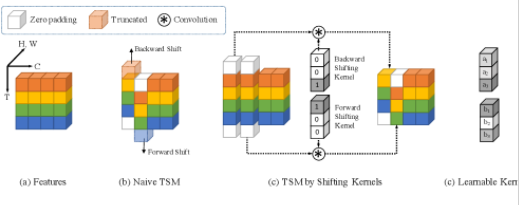
"Problemas e innovación en visión artificial"
I spoke at the IEEE Student Chapter of the Technical Institute of Morelia for 2,000 people live, on how to approach challenges, innovation and open problems in computer vision
Conference
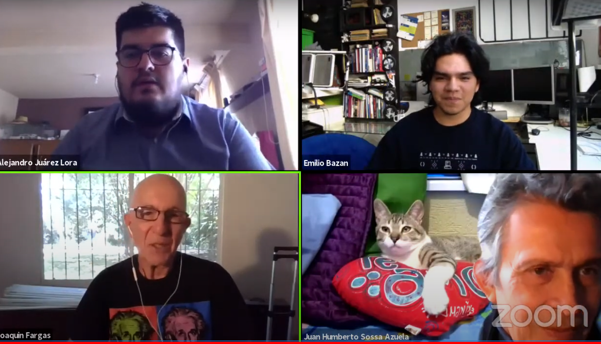
"Qué significa ser humano en el mundo de inteligencia artificial"
I organized and participated in a forum during the CORE Congress of the CIC at the Mexican Polytechnic Institute along PHD's and Thought leaders live for 100 researchers.
Forum
My contribution to the national agenda of A.I
I'm part of one of the most important organizations for the mexican government to advice and recommend the ethical, correct and distributed usage of AI, I contributed revisions and the introduction.
Contribution
Exploring Consciousness
An independently organized talk part of the CIC Forum of computing with AI PhD Erik Zamora.
Conference
Radio UNAM Interview
I was part of the voces en el campus national radio show during my High School.
Interview
RT Technology Documentary
I was part of the Computing Research Centre documentary where I briefly spoke on the benefits of technology being interconnected trough IOT and how we're implementing such
Interview
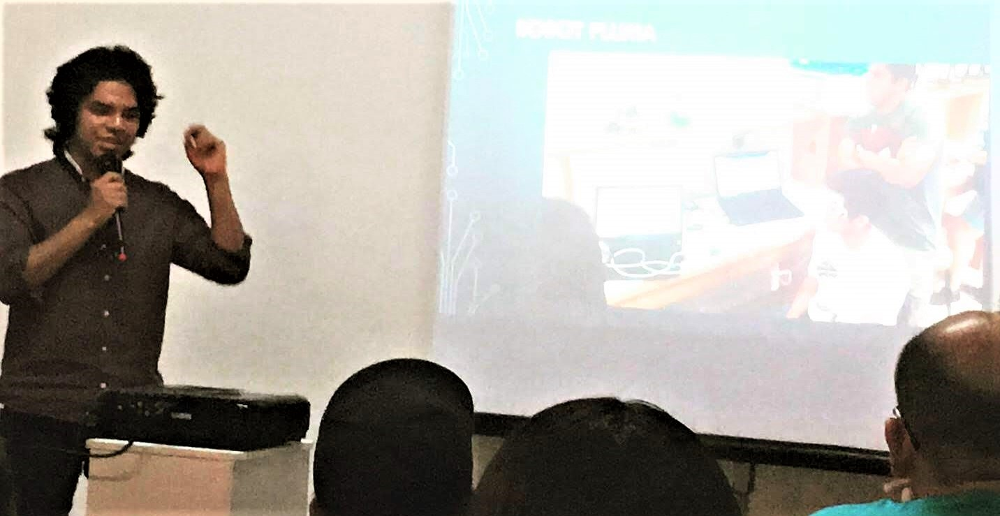
Using BCI's to help Control Loss Disease patients
This talk was given during the Brain Computer Interfaces summer program in Baja California Sur, La Paz, where we explored the possible use cases of biosensing to help disabled people and give a brief project demo on how biosensing triggering based robotic assistance works.
Conference

The atmosphere is conscious, and we can talk to it with AI
I summerized my final project for my computing technician specialty for a visual interface for realtime atmospheric data and the possibilities for using time-series regression for understanding real complex patterns, got featured on the university newspaper as well.
Conference

Using pygame to teach programming
This is part of the final round of the graphical computing contest.
Conference

The national encounter of artificial intelligence
I helped organize the national encounter of artificial intelligence contacting several speakers and moderating participation of more than 8 state universities
Forum
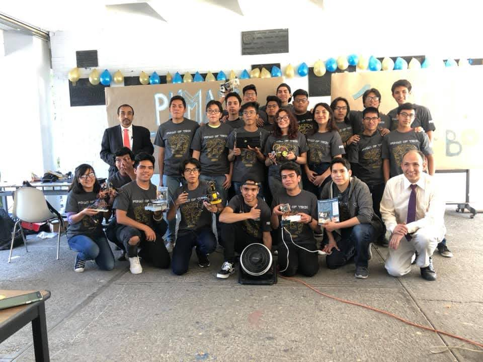
Introduction to robotics using arduino
I was the instructor of the second version of the introductory 20h course on robotics and programming.
Instructor
My Projects.
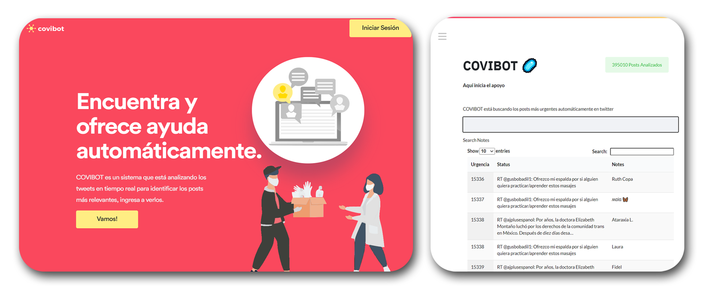
COVIBOT.me
NLP Bot + Web platform for browsing most likely volunteering related posts in real time in twitter
Flask
Firebase

MiSapiens
Web Platform for sharing interactive, neuroscience educational resources OPENGL + CMS with Google Drive API, Harvard Neuroscience Medical Enciclopedia API
WebGL
HTML+CSS
Firebase

Pathcheck Consulting Adoption Simulation
Agent-Based GIS Simulation of adoption of Contact Tracing Apps using real grocery store and superstore location, psychological trends infered from twitter api, real demographic distribution and inherent distribution probability of store coupons and hormonal cycles, and QR proof of concept.
geomesa
JS + Chart.js
HTML+CSS

FEVICI
Fullstack Application with chat integration, posts, friends realtime messaging, html interactive js CMS, Firebase (Auth,Firestore,RealtimeChat,CI/CD)
Cloud Run
Flask
HTML+CSS

SimulaVirus
Agent-Based Javascript Pandemic Simulator!
Firebase
JS + Chart.js
HTML+CSS

epsilon.app
Pose esitmation pose tool for presenting 3d models and control exposition data
Firebase
JS + Chart.js
HTML+CSS

Dignosys
This aplication aimed for medical professionals uses Machine Ensamble Learning with 5 different AI models to process parallel requests for detecting heart risk factor probabilitys from anonymous forms and a semi descentralized system, I built the entire backend and dashboard frontent with MongoDB,Pandas,Tensorflow,Flask and Cloud Run
Cloud Run
Flask
HTML+CSS

Chappie's Consciousness
Artistic Conceptualization of how a computational model of consciousness would look like
JS + Chart.js
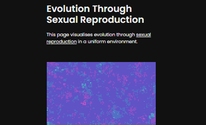
Simulating Sexual Reproduction
This page visualises evolution through sexual reproduction in a uniform environment.
Canvas.JS
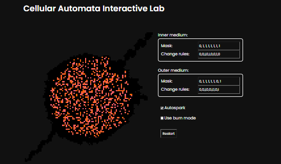
Cellular Automata Interactive Lab
Set autospark off and try to spark the fire using your mouse. Change the settings, click restart and see what happens.
Chart.JS
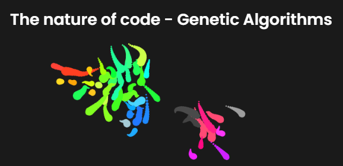
Genetic Algorithm Agents
Darwinian evolution — variation, selection, heredity — and examine how they can be applied in a computer simulation.
TF.JS
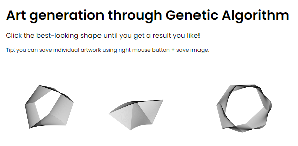
Art Generation Trough Genetic Algorithms
Creating art using AI that adapts and evolved based on what the user enjoys most
TF.JS
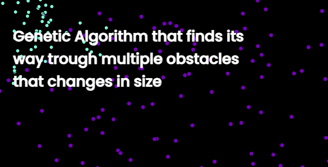
Genetic Algorithm Pathfinding with changing sizes
Agent G.A. Pathfinding with size variabiltiy
p5.JS

Seanet AI
Neural Net for sargassum algae detection trough specter radiometry by its special reflectance
Python + Tensorflow

HandAI
Python GUI for Convolutional Pose Machine and ATMEGA328 Microcontrollers for movement control transfer
Python + Tensorflow
Arduino

Open Guard
Action Recognition, Anomaly Detection, ActionXPose, Support Vector Machine, RGB, OpenPose, BMbD, M-BMbD, JBMOPbD
Python + OpenCV
JS

iristech.io
Fullstack CMS, three.js, design layouts, Google Spreadsheets API
Google Cloud
JS + Three.js + React.js
HTML+CSS
Openlibrary.tech
IPFS Library with over 2,000 math science and programming free books
Next JS
IPFS
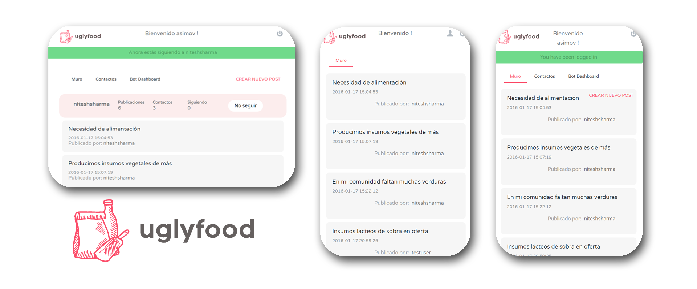
UglyFood
Small Social Platform for sharing food overproduction for MIT's Latin America vs COVID-19 Hackaton
MongoDB
Flask
C0nnect Website
Animated firebase functions website
HTML+CSS
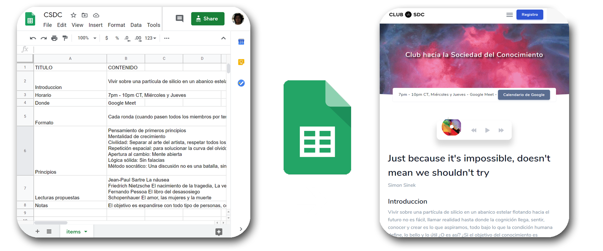
Club-HSDC
Google Sheets Content Managment System
Flask
HTML+CSS
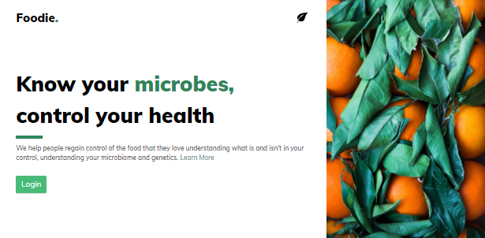
Foodie.ai
Foodie AI is a platform for analyzing the gut microbiome as you evolve, with computer vision registering your food intake and edge computing relating correlations between your gut microbiome and illness predisposition
Angular JS
TailwingCSS
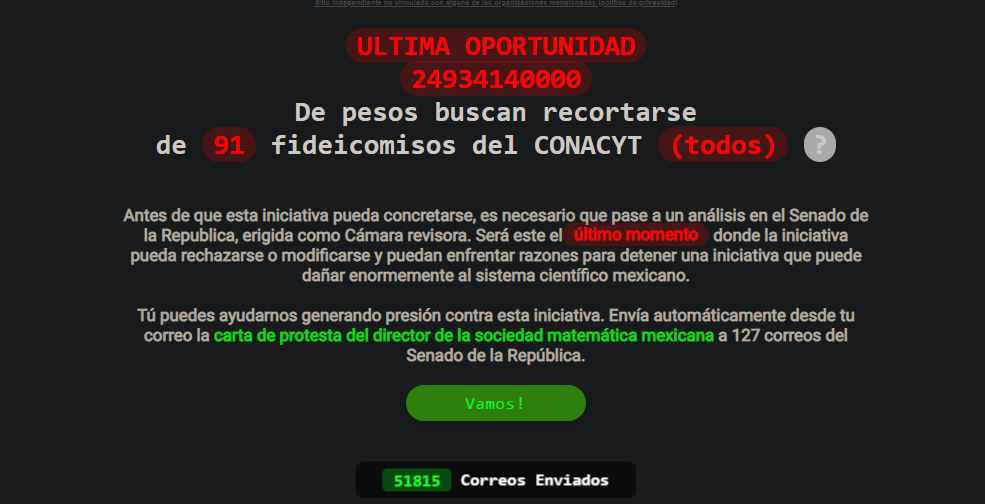
SinCienciaNoHayFuturo
Site for protesting against science budget cost, 50,000 mails sent until now
Flask
HTML+CSS
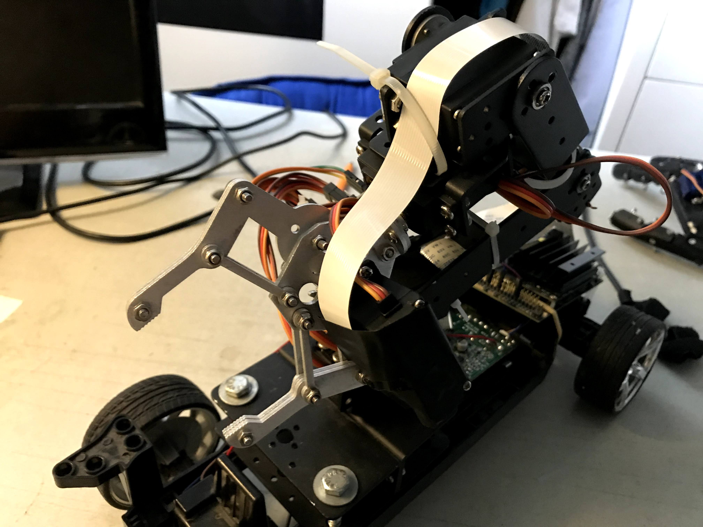
The Conscious Robot
This robot is controlled by the connectomic simulation of a c. elegans with object recognition input and overall interraction being mapped from a 8 DOF robotic arm while the system is embeded in a Jetson Nano and Temporary Shift Modules
Python
Jetson Nano
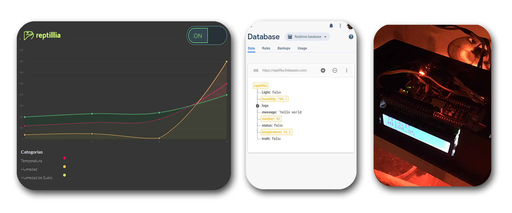
Reptilllia
ESP 8266 Based Firebase webserver for sensor monitoring
Arduino
JS
Firebase
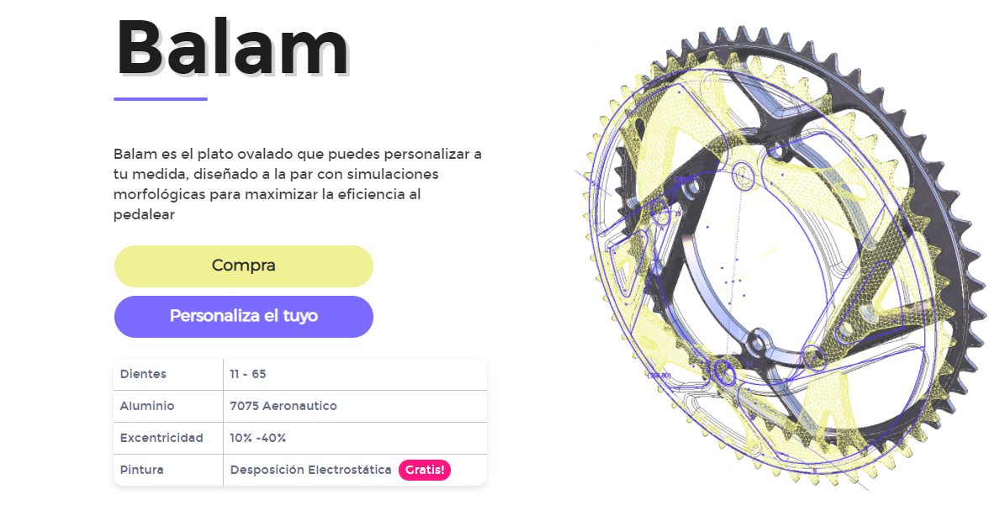
Brake Customization System
Built with vanilla js, firebase functions and firestore.
Flask
HTML+CSS

AR UNAM
Augmented Reality Application for educationa historic animations
Swift

Garcia AR
Finalist out of 40 projects at Let's Hack Mexico Hackaton by Hackify, 3d model CMS, user management and SOTA Markerless Web Based Augmented Reality previsualization
HTML+CSS
Three.js + ARWebkit
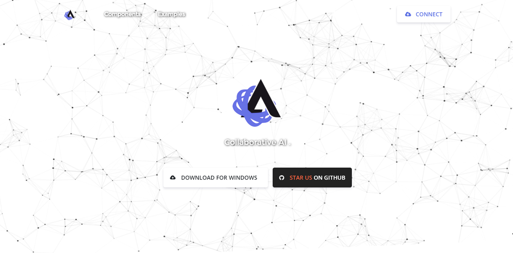
AsimovNET
Platform for colaborative Artificial Intelligence Programming via Transfer Learning
HTML+CSS
Analista AI
Simple landing platform for the current R&D analysis project I founded that serves as an observatory for public data.
HTML+CSS

AR + DL
DL + Augmented Reality Math Interaction!
Swift
Personal-Website
HTML+CSS
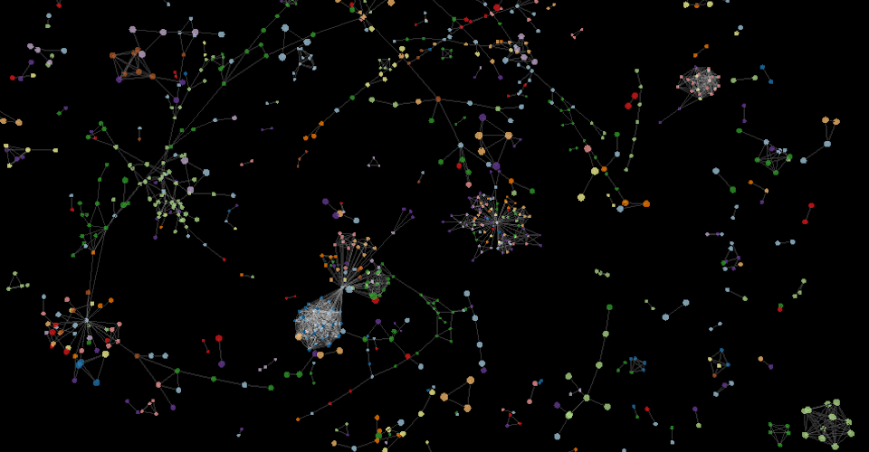
InScriptum
Tool for graphically represent relationships between literature pieces and its context understanding
MongoDB
JS
Web Playground
15 + Websites built with various tools including: Javascript, SQL, Epress.js, Node.js, React.js, etc.
HTML+CSS
JS
VRML-Compression-Algorithm
Final project of my technical career in computing at UNAM
Python
IRIS-Tech
Iris tech first static website
MongoDB
CS50 Playground
HTML+CSS
IRIS-Tech-2
MongoDB
HTML+CSS
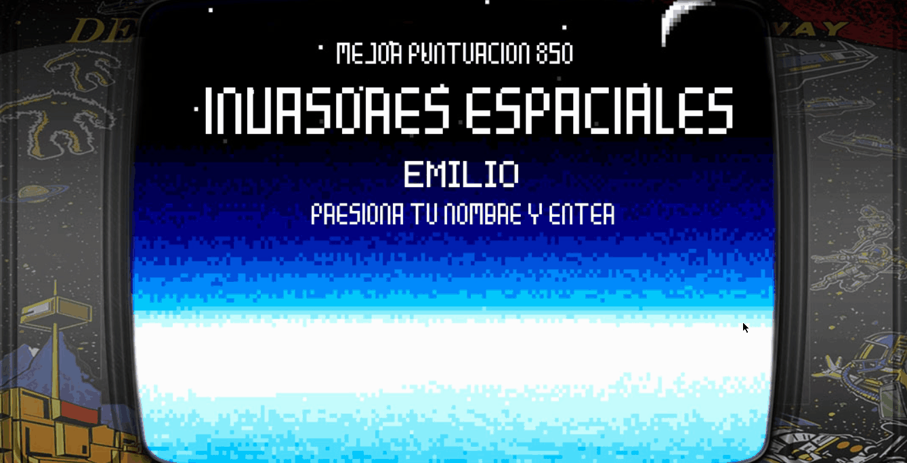
SpaceInvaders
Python + Pygame